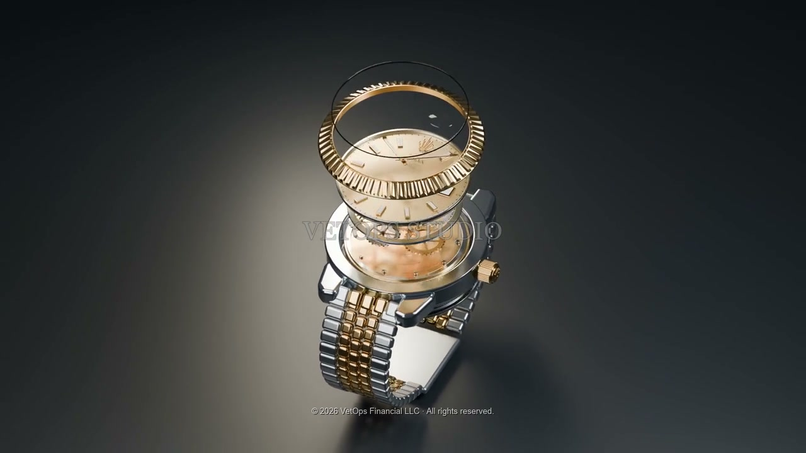
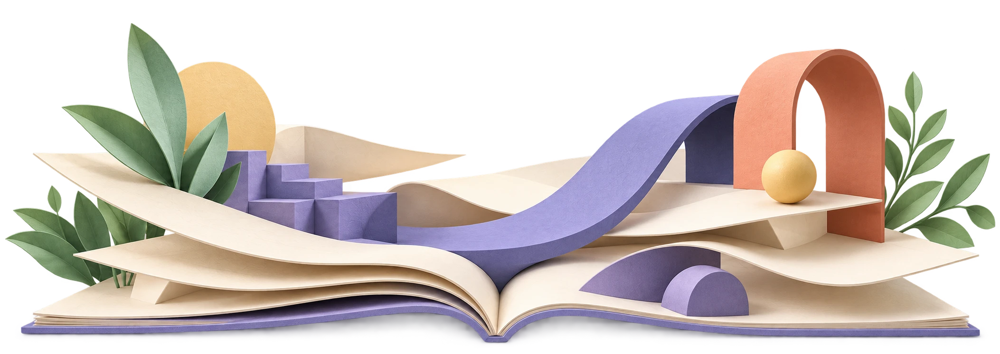

Your work deserves to be seen.
Websites, 3D product animation, and brand films for businesses built on craftsmanship.
Scroll to step inside
An interactive mechanical study
01 / THE WORKBENCH
Look closer.
Go deeper.
Reveal the construction. Turn the parts. Discover what makes the whole.
See how it comes together.
Reveal the layers, then choose a component to bring its construction into focus.
Illustrative visualization. Not a mechanically validated engineering simulation.
02 / FILMS & CRAFT
Every detail.
A different story.
Product films and original studies, made to reveal the craft.
Concept preview · Family-related project
The original watch product animation from the Carats & Timepieces concept preview.

03 / WEBSITE DESIGN
A place
for your work.
Custom websites for the people who make, teach, and build. Start with Gina’s live professional portfolio.
Live website · Professional portfolio
A home for instructional design work, bringing case studies, curriculum materials, and professional experience together.
Opens in a new tab.
Build a website like this ↗
04 / YOUR NEXT PROJECT
Let’s make your
work stand out.
Tell me what you make, who you want to reach, and what you have in mind. We’ll work out the right format and scope together.
Brian Penrod, DBA
Founder & CEO, VetOps Financial
Fayetteville, North Carolina